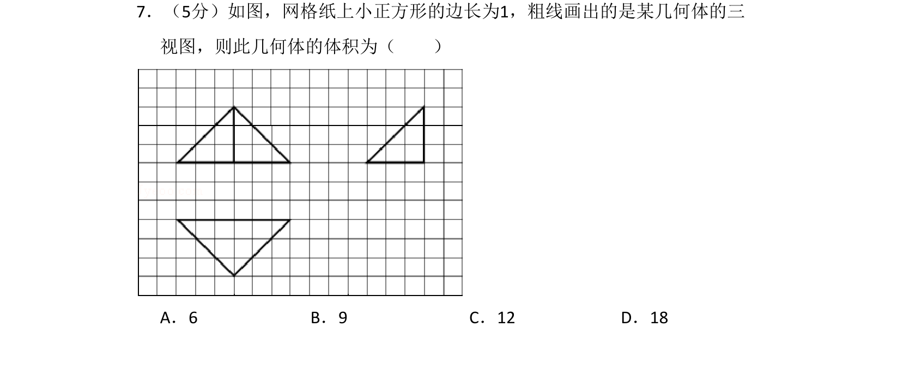
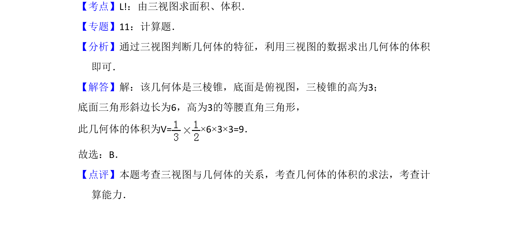

考点：由三视图求面积 体积 棱锥体积 空间想象

由三视图还原几何体并计算其体积，涉及三棱锥体积公式。

📄 原 PDF 第 6 页：
素材/真题/吉林/2008-2024·（吉林）数学高考真题/2012年高考数学试卷（理）（新课标）（解析卷）.pdf
7．（5分）如图，网格纸上小正方形的边长为1，粗线画出的是某几何体的三 视图，则此几何体的体积为（ ） A．6 B．9 C．12 D．18
【考点】L!：由三视图求面积、体积．菁优网版权所有 【专题】11：计算题． 【分析】通过三视图判断几何体的特征，利用三视图的数据求出几何体的体积 即可． 【解答】解：该几何体是三棱锥，底面是俯视图，三棱锥的高为3； 底面三角形斜边长为6，高为3的等腰直角三角形， 此几何体的体积为V=×6×3×3=9． 故选：B． 【点评】本题考查三视图与几何体的关系，考查几何体的体积的求法，考查计 算能力．